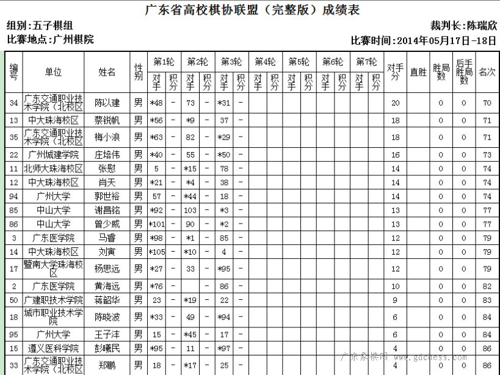

第五届广东高校棋类联赛（广东省大学生棋类联赛）决赛5月17--18日将在广州棋院举行。其中，五子棋比赛共有来自31所高校（校区）104名选手经过初赛晋级本次决赛。比赛采用2009版竞赛规则，三手交换、五手两打。目前看，广东工贸职业技术学院、中山大学、广东工业大学仍是个人及团体冠军的有力竞争者。届时广州的五子棋爱好者可前往现场观摩。
五子棋上届团体前五：广东工贸职业技术学院、中山大学、广东工业大学、广东轻工职业技术学院、广州城市职业学院
五子棋上届个人前六：广工贸林奕忠、广工贸莫伟峰、华南师大李国驹、广东工业大学黄权、中大陈祖信（2012欧派杯全国五子棋公开赛第15）、广轻工李佛新（2014佛山首届禅之弈10校联赛五子棋冠军）
围棋团体上届冠军：华南农业大学
象棋团体上届冠军：华南农业大学
国际象棋团体上届冠军：华南农业大学
华农今年三棋霸主地位是否动摇，也是看点。
［此帖子已被 无尽 在 2014-5-13 18:57:15 编辑过］
［ 小小亦默同学于 2014-5-19 10:07:33 时花20金币送鲜花一朵］
［ 小小亦默同学于 2014-5-19 10:07:33 时花20金币送鲜花一朵］
［ 小小亦默同学于 2014-5-19 10:07:33 时花20金币送鲜花一朵］
［ 小小亦默同学于 2014-5-19 10:07:33 时花20金币送鲜花一朵］
［ 小小亦默同学于 2014-5-19 10:07:33 时花20金币送鲜花一朵］
［ 小小亦默同学于 2014-5-19 10:07:33 时花20金币送鲜花一朵］
［ 小小亦默同学于 2014-5-19 10:07:33 时花20金币送鲜花一朵］
［ 小小亦默同学于 2014-5-19 10:07:33 时花20金币送鲜花一朵］
［ 小小亦默同学于 2014-5-19 10:07:33 时花20金币送鲜花一朵］
［ 小小亦默同学于 2014-5-19 10:07:33 时花20金币送鲜花一朵］
第五届广东省大学生棋类联赛
一、主办单位：广东省棋文化促进会
广东东湖棋院
广东省高校棋协联盟
二、承办单位：北京理工大学珠海学院
三、协办单位：北京理工大学珠海学院棋类协会
华南理工大学棋类协会
广东技术师范学院天河学院棋类协会
暨南大学（本部）天元棋牌社
广州大学华软软件学院棋类协会
华南理工大学广州学院缘弈棋社
广东科技学院博弈棋艺社
韶关学院棋类协会
四、合作单位：广东省棋类协会广州棋院
五、参赛学校：中山大学、华南理工大学、暨南大学、广东外语外贸大学、南方医科大学、华南农业大学、广东工业大学、广州大学、华南师范大学、中山大学新华学院、中山大学南方学院、广州中医药大学、广东外语艺术职业学院、广东药学院、广东商学院、广东金融学院、广东工贸职业技术学院、广东交通职业技术学院、广东水利电力职业技术学院、广东技术师范学院天河学院、广东技术师范学院北校区、广东技术师范学院西校区、广东工业大学华立学院、广东工程职业技术学院、广东科学技术职业学院、广东食品药品职业学院、广东警官学院、华南农业大学珠江学院、华南师范大学增城学院、仲恺农业工程学院、广州城建职业学院、广州大学华软软件学院广州大学松田学院、广州康大职业技术学院、广州铁路职业技术学院、广州涉外经济职业技术学院、广州科技职业技术学院、广州航海高等专科学校 广东省技师学院、河源职业技术学院、广州体育学院（排名不分先后）
六、比赛时间：2014年5月17--18日
七、比赛地点：广州棋院
八、竞赛项目：象棋、国际象棋、围棋、五子棋
九、比赛规则：
1、象棋执行国家体育总局审定的《1999版象棋竞赛规则》
2、围棋执行中国围棋协会审定的《2002年围棋竞赛规则》
3、国际象棋执行国家体育总局审定的《2001版国际象棋竞赛规则》
4、五子棋执行国家体育总局审定的《2009版五子棋竞赛规则》
十、名次奖励及计分方式：
1、每种棋类团体取前三名进行奖励，个人取前十名奖励。
2、本次比赛计分按照瑞士制计分方法计算（胜记2分，和记1分，负不计分）。
2、象棋团队计分取队伍成绩最好的四人成绩进行计算。
3、围棋、国际象棋、五子棋都取队伍成绩最好的三人成绩进行计算。
4、计入团队成绩的每个女生每轮可以有0.5分的额外加分，但总的加分不超过5分。
十一、经费：
本次大赛所有参赛人员的住宿、车路、餐饮等费用自理。
十二、其他
1、 参赛运动员的人身意外伤病保险由参赛单位负责办理
2 、参赛运动员禁用违禁药物。
十三、裁判员及仲裁委员会由大会统一指派。
十四、本规程解释权属主办单位，未尽事宜，另行通知。
决赛时间安排
象棋时间安排
5月17日上午9:30―10:30（开幕式）
10:30―11:20（第一轮）
11:30―12:20（第二轮）
下午 14:00―14:50（第三轮）
15:00―15:50（第四轮）
16:00―16:50（第五轮）
5月18日上午10:00―10:50（第六轮）
11:00―11:50（第七轮）
14:00―14:50（第八轮）
国际象棋、五子棋时间安排
5月17日上午 10:30―11:20（第一轮）
下午 14:00―14:50（第二轮）
15:00―15:50（第三轮）
16:00―16:50（第四轮）
5月18日上午10:00―11:00（第五轮）
11:10―12:00（第六轮）
14:00―14:50（第七轮）
围棋时间安排
5月17日上午10:30―11:30（第一轮）
下午 14:00―15:00（第二轮）
15:20―16:20（第三轮）
16:40―17:40（第四轮）
5月18日上午 10:00―11:00（第五轮）
11:20―12:20（第六轮）
14:00―15:00（第七轮）
15:15―16:45（大师赛）
16:50―17:30（颁奖、闭幕式）
［此帖子已被 无尽 在 2014-5-13 18:42:58 编辑过］
参赛人员名单
东莞赛区
东莞理工城市学院
象棋:杨澹聂臻李可煜
国际象棋：何正衡
五子棋：郑海源
广东医学院
象棋：杨祖强郭迎煊刘畅王润林周泯富杨贤盛
邱树荣
女生：谢兰芝邓穗瑶刘素兵廖晓
五子棋：黄海远马睿连嘉琪
东莞理工学院
象棋: 肖桂锋
围棋：叶创新梁硕
五子棋：蔡毓潮庞卓标余伟育
广东科技学院
象棋: 黄智郭庆均黄程方楚欣
中大新华学院
象棋: 林宏浩李炜杰陈桂煌
围棋：罗宇杰黄毅帆麦钦顺
国际象棋：林炫越江瑞涛黄静汶康维荣
五子棋：巫俊华肖秋原辛佳佳
珠海赛区
北京师范大学珠海校区
象棋：郑绍忠李静澜
国象：陈泽宇刘洋
五子棋：宋奕庭张慰
广东科学技术职业学院
象棋：团体陈永权周繁星李相操余嘉俊梁徽标
个人：刘镇浩陈伟东池瑞生
国象：李创业严远文
中山大学珠海校区
象棋：团体陈德海王春南郭凌峰梁德豪
国象：团体林佩雯（女）蔡鹏程陈国信武鸿基
围棋：团队1黄行昌张纯睿张文李正晨
团队2庄桂云周晓畅袁小刘若开
五子棋：团队肖天蔡锐帆刘寅
吉林大学珠海分校
象棋：刘圣民胡兆达
围棋：李真纪新航
遵义医科学院
象棋：何林州刘桓
五子棋：彭曦民
暨南大学珠海校区
象棋：朱杰彬刘文财
国象：史修齐
五子棋：戴铭杨思远
城市职业技术学院
象棋：团队詹宏棍钟文洋曾何新黄少豪欧紫烨
个人陈裕荣
五子棋：团队陈晓波蔡德华庄晓彬
UIC
象棋：曾孟冷宇超
国象：团队郭h胡锐杰宋洪全李彬豪
围棋：团队肖卓陈瑜周 （女）
个人张敬一
五子棋：李嘉辉
北京理工大学珠海学院
象棋：团队温景钰罗婉雯卢宛群黄炜林冠宏
个人杨锐华全泽义朱高展
围棋：苏羽阳陈逸冰
国象：李皓鹏陈燕萍
从化赛区
广州城建学院
象棋：团体陈灿峰黄博楷谢华胜杜楠宁陈光楚
五子棋：庄培伟
广东警官学院
象棋：团体陈权剑李佩阳侯承灯李宇岳黄华宝
广州科技职业技术学院
象棋：团队骆锋杨业陈嵘沈创然李雠
个人魏仲奇
围棋：冯志威
广东工业大学华立学院
象棋：团队陈隽川赵崇标周浩施嘉伟马文川
围棋：林丰
五子棋：团队黄涛蒋琪曾祥令
广州大学华软软件学院
象棋：团队朱献伟林志明蔡光碧卓轩郭庆智
个人王翔莫家荣胡伟昊
围棋：姚慧欣
五子棋：梁彩珊
华南师范大学增城学院
象棋：团队杨子浩罗宇航刘付潘军曾文州张永文
个人谭益伦曾钰霖
五子棋：团队张婵妃岳亮何洪颖
广东机电职业技术学院
象棋：团队陈华滔梁焱柯姚楚烽宋国良林俊铁
个人梁振权李金条
广东农工商职业技术学院
象棋：团队郑三雄郭裕东江涛郭彬圣刘龙飞
个人潘文轩
广东水利电力职业技术学院
象棋：团队江滕杰杨基锴王毅华黄海坚江海南
中山大学南方学院
围棋：团队李锐标张嘉裕关凌月赵秀伦
国象：团队吴键江京梁羽剑尤臻雄
象棋：傅嘉辉管润鸿
仲恺农业工程学院
象棋：团队1洪粤滨吴楚武陈洁浩林家振陈涛
团队2詹道宁黄相华徐志鹏邝金全冼可亨
国象：冯家杰卫思宇翁健
华南农业大学珠江学院
象棋：李正林峻光肖佳文
围棋：林帆严朝煜
五子棋：团队刘忻杰江天智吴仙业
个人林美珠
花都赛区
华南理工大学广州学院
象棋：团队1林伯轩谢雷陈裕奔林海|黄增远
团队2罗光亮黄纬标卢泽宇陈志辉
国象：团体1何志伟杨梓豪欧阳荆陈就
团队2张翎卢家骏曾嘉德周智鹏
围棋：团队廖金盛朱剑锋董哲安尹伟良
个人高春林
五子棋：团队彭立衡吴松创卢智坚
广东行政职业学院
象棋：何晓生张永新
围棋：冯腾飞
广东交通职业技术学院（北校区）
象棋：团队黄思网梁成坚区江恩李杏安彭勇志
国象：刘源茂
五子棋：郑鹏陈以建梅小浪
广东轻工职业技术学院
象棋：团队黄思定郑源鑫李远尧郭中英林喜帆
国象：团队温进培方伟燕尤斯亮陈锦城
围棋：团队廖浩奕林少帆徐南粤
五子棋：团队 1何进财谢嘉媚林娟
团队2李佛新郑福健何泽松
广东技术师范学院（北校区）
象棋：团队王德麦智宁卢杰辉刘斌全梁卫棋
围棋：罗懿
五子棋：陈卓均
广东第二师范学院（花都校区）
象棋：李宇轩候贵才梁桦楠
围棋：团队黄博谢毅雄余德武
五子棋：团队张典吴妙花吴嘉宝
个人陈敏豪
广州大学市政技术学院
象棋：刘康谋
天河赛区
广东建设职业技术学院
五子棋：蒋韶华
广东金融学院
围棋：团队张澍椿郑科雷林林蒋瑶
广东食品药品职业学院
象棋：洪英鹏
国象：陈家辉谢莹
华南师范大学（本部）
象棋：柯汶宇
围棋：张启邦
国象：黄芷筠
五子棋：团队周佳翰吴学睿李睿行
华南农业大学
象棋：团队1张译俪叶蒙通郑柱荣王宇航谢家源
团队2何永乐刘浩和杨粤潇伍国洪李金波
团队3颜昌伟梁一峰黄子豪陈文聪罗泽宇
围棋：团队1张嗣丰靳艺超薛文博卫文瑾
团队2丘若阳陈秋涵王若愚韦志豪
五子棋：团队罗佳敏王跃林相帅
个人彭旭辉张志成
国象：团队 :郑宝欣朱天卓陈煜彬彭鸿志
个人：吴俊锋
南方医科大学
围棋：王翡杨浩东田镇铭
国象：王慧玲
广州城市职业学院
象棋：团队1林锦辉朱廷相黄卓勋李献忠
五子棋：团队1梁柏廉梁杏丽方子荣
团队2王胜威刘曼琪范伟栋
团队3李子绚黎曹鹤姚佳
国象：团队1关俊朗黄苏敏莫嘉雪胡宇亮
广东工贸职业技术学院
象棋：团体郑松烈李杰黄向前黄启文莫海文
个人：邓晓浩
五子棋：团队1莫伟峰李晓芳姚泽鹏
团队2杨伟杰吴伟鹏詹源滨
团队3邝浩明陈北山温俊威
暨南大学
象棋：
团队1陈湘强蓝政鸿谭启明刘文财王其意
团队2区嘉莹李i逸卢英杰卢永杰孙浩峰
围棋：团队1陆天傲苏伟胜曹姝吴锦嘉
团队2莫正匡丁文简超孙美婷
五邑大学
象棋：
团队陈章平冯振达陈立贤钟泽安邹海铭
围棋：个人林扬
广东技术师范学院天河学院
中象：团队：许展华李文锐戴志建黄龙江林忠洋
个人：郑润东
围棋：团队：林晓斌伍文杰区享佳梁嘉欣
五子棋：团队：王玮锋刁子奇王晓文
大学城赛区
中山大学
中象：团体1队: 张浩洋 张晟陈远威 童瑞欣 莫梓亮
团体2队: 李胤尤睿 周腾腾陈潭江曾昭驰
围棋：团队1队：王锡宁肖越 陈奕龙 陈立
个人：汪舒桐 曹孟谦 吴梓昊
国象：团队1队：唐薇薇冯懿青王乐阳陈肖
五子棋：团体1队：陈祖信 盘先桐 周建丰
团体2队：柳佳承 岳杰 林志鹏
个人：谢昌铭 曾少威
广东工业大学
中象：团体1队：陈钊洪冼卓鸿温家昌蔡子轩陈焕乐
团体2队：游学玮周建雄曾柳杏卫子麒李达伟
围棋：团体1队：杨增荣林彬王立诚刘立晨
团队2队：罗奕斐杨豪强黄坤陈骏涛
个人：李慧
国象：团队1队：黄一帆谢柏明黄晋增林煊
个人：林楚欣
五子棋：团体1队：任冠豪郑填诺黄权
团体2队：詹斌陈豪饶熠舟
广州大学
中象：团体1队：杨建军王业李宝洲蒋明仙何朗贤
团体2队：钟桥辉易胜旗谢伟雄陈耸刘磊
个人：陈文军
围棋：个人：谭旭黎莹光姚景耀
国象：个人：林松翔
五子棋：团队1队：王亚坤 郭世裕王子沣
广州航海学院
中象：个人：刘兴华柯永杰唐燕媚
华南师范大学（大学城校区）
中象：个人：周锡栋 莫忠有
五子棋：个人：李苑婷
广东外语外贸大学
中象：个人：谢炎璇施慧 陈坚杰王靖鹏
围棋：个人：王嘉扬
国象：个人：林苡罗汉涛
华南理工大学
中象：团体1队：吴冬冬 李达明 张境忠 郭丰鸣 郭益凡
团体2队：周斌 赖鹏飞 麦瑞杰 劳锐敏 郑启凡
团体3队：黄镇林 李志乾 谢乐 凌学剑 赖超杰
个人：梁广达
围棋：团体1队：陈志亮 蓝思进 徐立 苏婕（女）
个人：王子琛
国象：团体1队：谢晓敏（女） 陈亿桐 杨帆 吴纬治
五子棋:团体1队: 黄妍（女） 傅翼飞丁甲
个人: 林杰威 黎国雄
粤北赛区
韶关学院：
围棋：黄越扬
［此帖子已被 无尽 在 2014-5-13 20:10:51 编辑过］
［此帖子已被 无尽 在 2014-5-13 20:17:13 编辑过］
 去看看
去看看

最後一我5僖缓11分12分6俚囊嗄。。我投了以後亦默f，哎呀你下的不e，我都o了，之前A那N多都]o的。。我f，你A了f什麽都可以吖。。要是我A了就f，亦默你好害阿。。我前面都好p阿，δ阕铍y了。。。後泶的r候，我他一妹子的棋力。。他f，她能虐我。反正我最菜了，我不下棋。。。。你f@人。。话说亦默妹子发话不能拍照。。俺可是冒死偷拍的呀。。

5月18日，第五届广东高校棋类联赛决赛在广州棋院落幕。五子棋比赛中，中山大学两支队伍强势包揽团体冠亚军，广东工贸职业技术学院、广东轻工职业
技术学院、广州城市职业学院分获团体3-5名。个人成绩方面，男子组录取前10名，依次是：中山大学陈祖信、中山大学盘先桐、华南理工大学广州学院彭立
衡、华南农业大学珠江学院江天智、中山大学柳佳承、中山大学岳杰、中山大学林志鹏、广东工贸职业技术学院陈北山、广东工贸职业技术学院姚泽鹏、广州城
建学院郑泽佳；女子组录取前6名，分别是华南农业大学罗佳敏卫冕女子冠军（不分组个人第5）、广东轻工职业技术学院林晓霞再次屈居亚军、广东工贸职业技
术学院李晓芳、广州城市职业学院梁杏丽、广东轻工职业技术学院钟土娇、广州城市职业学院刘曼琪。
其他棋种方面，华南农业大学获得象棋团体冠军、广东工业大学获得围棋团体冠军、华南理工大学获得国际象棋团体冠军。中山大学获得总团体冠军，上届
霸主华南农业大学屈居第二。
赛后朱凯、何骏、梁昭晖分别与五子棋个人前15名选手分三组进行 1 VS 5 的多面打活动，并为获奖选手颁奖。
［ 水晶铃铃同学于 2014-5-19 22:10:31 时花20金币送鲜花一朵］
［ 水晶铃铃同学于 2014-5-19 22:10:31 时花20金币送鲜花一朵］
［ 水晶铃铃同学于 2014-5-19 22:10:31 时花20金币送鲜花一朵］
［ 水晶铃铃同学于 2014-5-19 22:10:31 时花20金币送鲜花一朵］
［ 水晶铃铃同学于 2014-5-19 22:10:31 时花20金币送鲜花一朵］
［此帖子已被 无尽 在 2014-5-19 22:19:11 编辑过］

［此帖子已被 无尽 在 2014-5-26 19:20:13 编辑过］